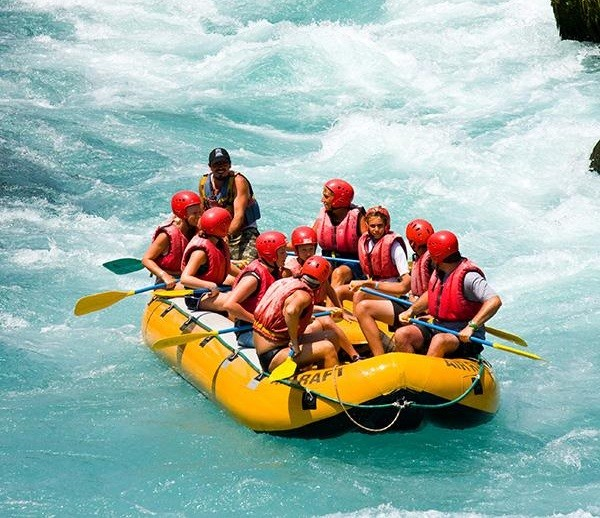

Our goal is to provide you with the best experience possible. We have been providing unforgettable experiences for over 30 years. We are a family owned and operated business that is dedicated to providing you with the best experience possible. We have a team of experienced guides that are dedicated to providing you with.